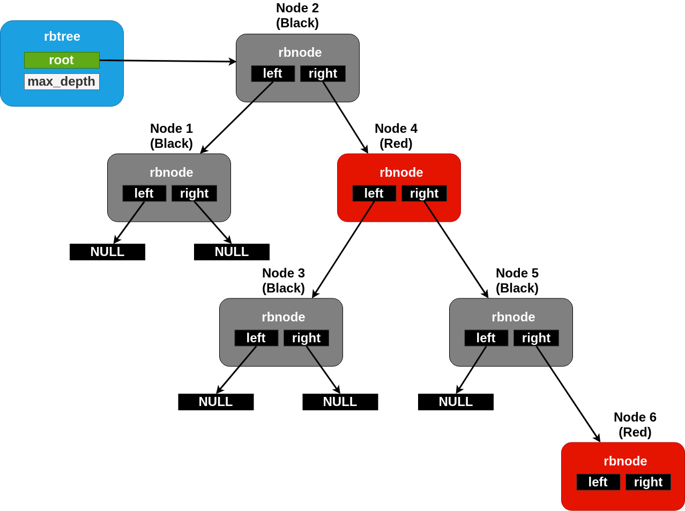

Balanced Red/Black Tree
For circumstances where sorted containers may become large at runtime, a list becomes problematic due to algorithmic costs of searching it. For these situations, Zephyr provides a balanced tree implementation which has runtimes on search and removal operations bounded at O(log2(N)) for a tree of size N. This is implemented using a conventional red/black tree as described by multiple academic sources.
The rbtree tracking struct for a rbtree may be initialized
anywhere in user accessible memory. It should contain only zero bits
before first use. No specific initialization API is needed or
required.
Unlike a list, where position is explicit, the ordering of nodes
within an rbtree must be provided as a predicate function by the user.
A function of type rb_lessthan_t() should be assigned to the
lessthan_fn field of the rbtree struct before any tree
operations are attempted. This function should, as its name suggests,
return a boolean True value if the first node argument is “less than”
the second in the ordering desired by the tree. Note that “equal” is
not allowed, nodes within a tree must have a single fixed order for
the algorithm to work correctly.
As with the slist and dlist containers, nodes within an rbtree are
represented as a rbnode structure which exists in
user-managed memory, typically embedded within the data structure
being tracked in the tree. Unlike the list code, the data within an
rbnode is entirely opaque. It is not possible for the user to extract
the binary tree topology and “manually” traverse the tree as it is for
a list.
Nodes can be inserted into a tree with rb_insert() and removed
with rb_remove(). Access to the “first” and “last” nodes within a
tree (in the sense of the order defined by the comparison function) is
provided by rb_get_min() and rb_get_max(). There is also a
predicate, rb_contains(), which returns a boolean True if the
provided node pointer exists as an element within the tree. As
described above, all of these routines are guaranteed to have at most
log time complexity in the size of the tree.
There are two mechanisms provided for enumerating all elements in an
rbtree. The first, rb_walk(), is a simple callback implementation
where the caller specifies a C function pointer and an untyped
argument to be passed to it, and the tree code calls that function for
each node in order. This has the advantage of a very simple
implementation, at the cost of a somewhat more cumbersome API for the
user (not unlike ISO C’s bsearch() routine). It is a recursive
implementation, however, and is thus not always available in
environments that forbid the use of unbounded stack techniques like
recursion.
There is also a RB_FOR_EACH iterator provided, which, like the
similar APIs for the lists, works to iterate over a list in a more
natural way, using a nested code block instead of a callback. It is
also nonrecursive, though it requires log-sized space on the stack by
default (however, this can be configured to use a fixed/maximally size
buffer instead where needed to avoid the dynamic allocation). As with
the lists, this is also available in a RB_FOR_EACH_CONTAINER
variant which enumerates using a pointer to a container field and not
the raw node pointer.
Tree Internals
As described, the Zephyr rbtree implementation is a conventional red/black tree as described pervasively in academic sources. Low level details about the algorithm are out of scope for this document, as they match existing conventions. This discussion will be limited to details notable or specific to the Zephyr implementation.
The core invariant guaranteed by the tree is that the path from the root of the tree to any leaf is no more than twice as long as the path to any other leaf. This is achieved by associating one bit of “color” with each node, either red or black, and enforcing a rule that no red child can be a child of another red child (i.e. that the number of black nodes on any path to the root must be the same, and that no more than that number of “extra” red nodes may be present). This rule is enforced by a set of rotation rules used to “fix” trees following modification.

A maximally unbalanced rbtree with a black height of two. No more nodes can be added underneath the rightmost node without rebalancing.
These rotations are conceptually implemented on top of a primitive
that “swaps” the position of one node with another in the list.
Typical implementations effect this by simply swapping the nodes
internal “data” pointers, but because the Zephyr rbnode is
intrusive, that cannot work. Zephyr must include somewhat more
elaborate code to handle the edge cases (for example, one swapped node
can be the root, or the two may already be parent/child).
The rbnode struct for a Zephyr rbtree contains only two
pointers, representing the “left”, and “right” children of a node
within the binary tree. Traversal of a tree for rebalancing following
modification, however, routinely requires the ability to iterate
“upwards” from a node as well. It is very common for red/black trees
in the industry to store a third “parent” pointer for this purpose.
Zephyr avoids this requirement by building a “stack” of node pointers
locally as it traverses downward through the tree and updating it
appropriately as modifications are made. So a Zephyr rbtree can be
implemented with no more runtime storage overhead than a dlist.
These properties, of a balanced tree data structure that works with only two pointers of data per node and that works without any need for a memory allocation API, are quite rare in the industry and are somewhat unique to Zephyr.